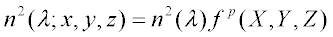

Creates a GRIN refractive material.
Syntax
MEDIA [ m ]
n [ n' n" . . . ] GRIN k p t [ l ] [ 'name' ]
:
| Option | Description |
|---|---|
| m | starting media number |
| n | real (or complex) refractive index |
| k | GRIN function number |
| p | exponent of GRIN function |
| t | step length to be used during ray trace |
| l | maximum number of ray steps in medium; default is 1000 |
| name | descriptive name that can be assigned to this medium (only the first 24 characters after the comment delimiter are stored). |
Remarks
-
GRIN specifies that the medium consists of Gradient index (GRIN)
materials. The square of the refractive index is given by:

where

is a general polynomial function and

is the refractive index entered on the MEDIA command. The technique for modeling dispersive gradients is to define a separate GRIN function for each WAVELENGTH and to update the object data between individual ray traces.
- The k refers to the SURFACE/FUNCTION that defines the index variation.
- If the constant coefficient of the
function
is unity, the refractive indices entered after the MEDIA command corresponds to those at the function's reference point.
The t is the step length in systems units used by ASAP while tracing a ray in this inhomogeneous medium.
- The GRIN function is defined in global coordinates. This is of little consequence if the gradients are radial (there is no position dependence along the axis), but if the desired gradient is axial, you may have to SHIFT the gradient to the correct global coordinates to align the gradient with the object.
- The function can be ARRAYed.